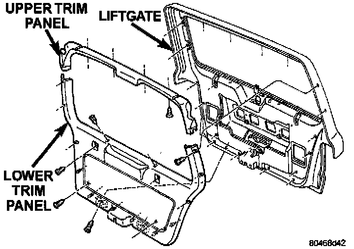
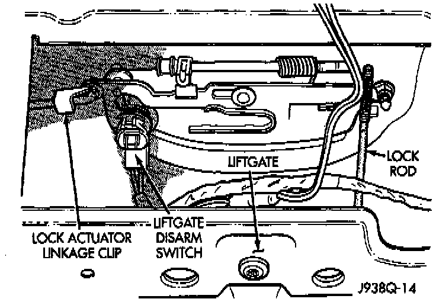

Liftgate Lock Cylinder Switch
REMOVAL1. Disconnect and isolate the battery negative cable.

2. Remove the screws that secure the liftgate lower trim panel to the liftgate.
3. Using a wide flat-bladed tool such as a trim stick, pry the trim panel away from the liftgate around the perimeter and remove the trim panel.
NOTE: To aid in the removal of the trim panel, start at the bottom of the panel.

4. Pry the liftgate lock cylinder switch off of the back of the lock cylinder.
5. Unplug the lock cylinder switch wire harness connector and remove the switch from inside the liftgate.
6. Reverse the removal procedures to install.